Chapter 16 Difficulties of Unconfoundedness in Observational Studies for Causal Effects
Part III of this book discusses causal inference with observational studies under two assumptions: unconfoundedness and overlap. Both are strong assumptions and are likely to be violated in practice. This chapter will discuss the difficulties of the unconfoundedness assumption. Chapters 17–19 will discuss various strategies for sensitivity analysis in observational studies with unmeasured confounding. Chapter 20 will discuss the difficulties of the overlap assumption.
82 Some basics of the causal diagram
Pearl, (1995) introduced the causal diagram as a powerful tool for causal inference in empirical research. Pearl, (2000) is a textbook on the causal diagram. Here I introduce the causal diagram as an intuitive tool for illustrating the causal relationships among variables.
For example, if we have the causal diagram
and focus on the causal effect of  on
on  ,
we can read it as the following data-generating process:
,
we can read it as the following data-generating process:
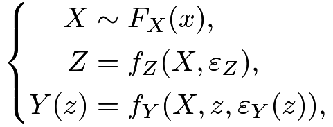 |
where
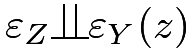
for both .
In the above, covariates
.
In the above, covariates  are generated from a distribution
are generated from a distribution 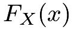
, the treatment assignment is a function of with a random error term 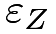
, and the potential outcome is a function of ,
is a function of ,  and a random error term
and a random error term 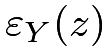
. We can easily read from the equations that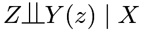
, i.e., the unconfoundedness assumption holds.If we have a causal diagram
we can read it as the following data-generating process:
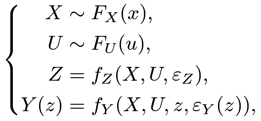 |
where for both . We can easily read from the equations that
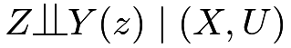
but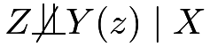
, i.e., the unconfoundedness assumption holds conditional on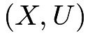
but does not hold conditional on only. In this case,  is an unmeasured confounder. In this diagram, is called an unmeasured confounder.
is an unmeasured confounder. In this diagram, is called an unmeasured confounder.
83 Assessing the unconfoundedness assumption
The unconfoundedness assumption
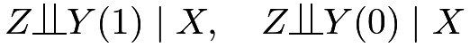 |
implies that
 |
 |
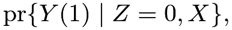 |
||
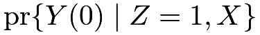 |
|
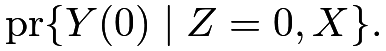 |
So the unconfoundedness assumption basically requires that the counterfactual distribution
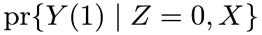
equals the observed distribution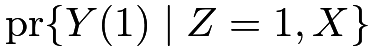
, and the counterfactual distribution equals the observed distribution
equals the observed distribution 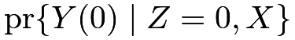
. Because the counterfactual distributions are not directly identifiable from the data, the unconfoundedness assumption is fundamentally untestable without additional assumptions. I will discuss two strategies to assess the unconfoundedness assumption. Here, “assess” is a weaker notion than “test”. The former is referred to as supplementary analysis that supports or undermines the initial analysis, but the latter is referred to as formal statistical testing.83.1 Using negative outcomes
Assume that
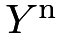
is an outcome similar to and ideally, shares the same confounding structure as . If we believe , then we also tend to believe 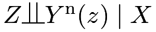
. Moreover, we know, a priori, the effect of on :
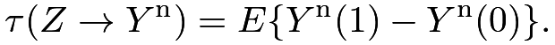 |
An important example is that
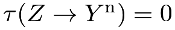
. A causal diagram satisfying these requirements is below:Example 16.1
Cornfield et al., (1959) studied the causal role of cigarette smoking on lung cancer based on observational studies. They controlled for many important background variables but it is still possible to have some unmeasured confounders biasing the observed effects. To strengthen the evidence for causation, they also reported the effect of cigarette smoking on car accidents, which was close to zero, the anticipated effect based on biology. So even if they could not rule out unmeasured confounding in the analysis, this supplementary analysis based on a negative outcome makes the evidence of the causal effect of cigarette smoking on lung cancer stronger.
Example 16.2
Imbens and Rubin, (2015) suggested using the lagged outcome as a negative outcome. In most cases, it is reasonable to believe that the lagged outcome and the outcome have a similar confounding structure. Since the lagged outcome happens before the treatment, the average causal effect on it must be  . However, their suggestion should be used with caution since in most studies we simply treat lagged outcomes as an observed confounder.
. However, their suggestion should be used with caution since in most studies we simply treat lagged outcomes as an observed confounder.
In some sense, the covariate balance check in Chapter 11 is a special case of using negative controls. Similar to the problem of using lagged outcomes as negative controls, those covariates are usually a part of the unconfoundedness assumption. Therefore, the failure of the covariate balance check does not really falsify the unconfoundedness assumption but rather the model specification of the propensity score.
Example 16.3
Observational studies of elderly persons have shown that vaccination against influenza remarkably reduces one’s risk of pneumonia/influenza hospitalization and all-cause mortality in the following season, after adjustment for measured covariates. Jackson et al., (2006) were skeptical about the large magnitude and thus conducted supplementary analysis on negative outcomes. Vaccination often begins in the fall, but influenza transmission is often minimal until the winter. Based on biology, the effect of vaccination should be most prominent during influenza season. But Jackson et al., (2006) found a greater effect before the influenza season, suggesting that the observed effect is due to unmeasured confounding.
Jackson et al., (2006) seems the most convincing one since the influenza-related outcomes before and during the influenza season should have similar confounding patterns. Cornfield et al., (1959)’s additional evidence seems weaker since car accidents and lung cancer have very different causal mechanisms with respect to cigarette smoking. In fact, Fisher, (1957)’s critique was that the relationship between cigarette smoking on lung cancer may be due to an unobserved genetic factor (see Chapter 17). Such a genetic factor might affect cigarette smoking and lung cancer simultaneously, but it seems unlikely that it also affects car accidents.
Lipsitch et al., (2010) is a recent article on negative outcomes. Rosenbaum, (1989) discussed the role of known effects in causal inference.
83.2 Using negative exposures
Negative exposures are duals of negative outcomes.
Assume  is a treatment variable similar to and shares the same confounding structure as . If we believe , then we tend to believe
is a treatment variable similar to and shares the same confounding structure as . If we believe , then we tend to believe
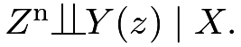
Moreover, we know, a priori, the effect of on
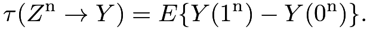 |
An important example is that
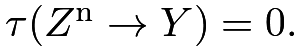
A causal diagram satisfying these requirements is below:Example 16.4
Sanderson et al., (2017) give many examples of negative exposures in determining the effect of intrauterine exposure on later outcomes by comparing the association of maternal exposure during pregnancy with the outcome of interest, with the association of paternal exposure with the same outcome. They review studies on the effect of maternal and paternal smoking on offspring outcomes, and studies on the effect of maternal and paternal BMI on later offspring BMI and autism spectrum disorder. In these examples, we expect the association of maternal exposure with the outcome to be larger than that of paternal exposure with the outcome.
83.3 Summary
The unconfoundedness assumption is fundamentally untestable without additional assumptions. Although negative outcomes and negative controls in observational studies cannot prove or disprove unconfoundedness, using them in supplementary analyses can strengthen the evidence for causation. However, it is often non-trivial to conduct this type of supplementary analysis because it involves more data and more importantly, a deeper understanding of the causal problems to find convincing negative outcomes and negative controls.
84 Problems of over-adjustment
We have discussed many methods for estimating causal effects under the unconfoundedness assumption:
 |
This is an assumption conditioning on . It is crucial to select the right set of that ensures the conditional independence.
Rosenbaum, 2002b () wrote that “there is no reason to avoid adjustment for a variable describing subjects before treatment.” Similarly, Rubin, (2007) wrote that “typically, the more conditional an assumption, the more acceptable it is.” Both argued that we should control for all observed pretreatment covariates. VanderWeele and Shpitser, (2011) called it the pretreatment criterion.
Pearl disagreed with this recommendation and gave two counterexamples below.
84.1 M-bias
M-bias appears in the following causal diagram with an M-structure:
We can read from the diagram the data-generating process:
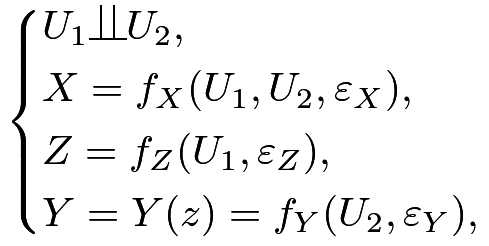 |
where
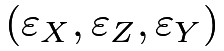
are independent random error terms. In the above causal diagram, is observed, but 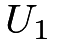
and are unobserved.
If we change the value of , the value of will not change at all. So the true causal effect of on must be . From the data-generating equations, we can read that
are unobserved.
If we change the value of , the value of will not change at all. So the true causal effect of on must be . From the data-generating equations, we can read that 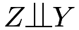
, so the association between and is , and, in particular,
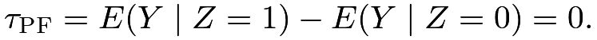 |
This means that without adjusting for the covariate , the simple estimator is unbiased for the true parameter.
However, if we condition on , then
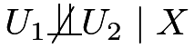
, and consequently,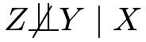
and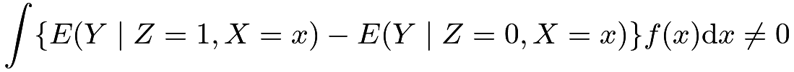 |
in general. To gain intuition, we consider the case with Normal linear models37:
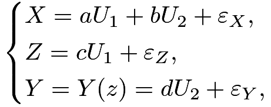 |
where
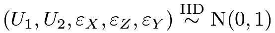
. We have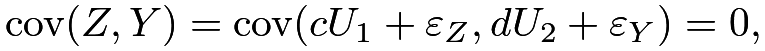 |
but by the result in Problem 1.3, the partial correlation coefficient between and given is38
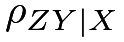 |
|
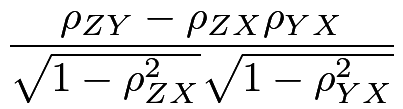 |
||
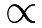 |
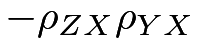 |
|||
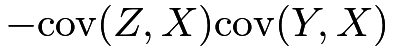 |
||||
|
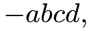 |
the product of the coefficients on the path from to .
So the unadjusted estimator is unbiased but the adjusted estimator has a bias proportional to
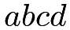
.The following simple example illustrates M-bias.
84.2 Z-bias
Consider the following causal diagram:
with the data generating process39
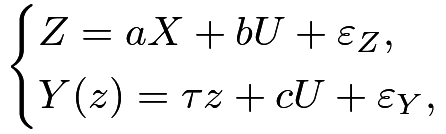 |
where
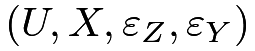
are IID . In this data-generating process, we have
, and affects only through .
. In this data-generating process, we have
, and affects only through .
The unadjusted estimator is
|
||||
|
||||
|
||||
|
which has bias . The adjusted estimator from the OLS of on satisfies
Solve the above linear system of to obtain the formula of :
| (81) |
which has bias . I relegate the details for solving the linear system of as Problem 16.1.
So the unadjusted estimator has a smaller bias than the adjusted estimator. More interestingly, the stronger the association between and is (measured by  ), the larger the bias of the adjusted estimator is.
), the larger the bias of the adjusted estimator is.
The mathematical derivation is not extremely hard. But this type of bias seems rather mysterious. Here is the intuition. The treatment is a function of , , and other random errors. If we condition on , it is merely a function of and other random errors. Therefore, conditioning on makes less random, and more critically, makes the unmeasured confounder play a more important role in . Consequently, the confounding bias due to is amplified by conditioning on . This idealized example illustrates the danger of over-adjusting for some covariates.
Heckman and Navarro-Lozano, (2004) observed this phenomenon in simulation studies.
Wooldridge, (2016, technical report in 2006) verified it in linear models.
Pearl, 2010a (); Pearl, (2011) explained it using causal diagrams.
Ding et al., 2017b () provided a more general theory as well as some intuition for this phenomenon.
This type of bias is called Z-bias because, in Pearl’s original papers, he used the symbol for our variable . Throughout the book, however, is used for the treatment variable. In Part V of this book, we will call an instrumental variable if it satisfies the causal diagram presented in this subsection. This justifies the instrumental variable bias as another name for this type of bias.
The following simple example illustrates Z-bias.
84.3 What covariates should we adjust for in observational studies?
We never know the true underlying data-generating process which can be quite complicated. However, the following causal diagram helps to clarify many ideas. It already rules out the possibility of  -bias discussed in Section 84.1.
-bias discussed in Section 84.1.
The covariates above have different features:
- 1.
affects both the treatment and the outcome. Conditioning on ensures the unconfoundedness assumption, so we should control for .
- 2.
is pure random noise not affecting either the treatment or the outcome. Including it in the analysis does not bias the estimate but introduces unnecessary variability in finite samples.
- 3.
is an instrumental variable that affects the outcome only through the treatment. In the diagram above, including it in the analysis does not bias the estimate but increases the variability of the estimate. However, with unmeasured confounding, including it in the analysis amplifies the bias as shown in Section 84.1.
- 4.
affects the outcome only but not the treatment. Without conditioning on it, the unconfoundedness assumption still holds. Since they are predictive of the outcome, including them in analysis often improves precision.
- 5.
 is affected by the treatment and outcome. It is a post-treatment variable, not a pretreatment covariate. We should not include it if the goal is to infer the effect of the treatment on the outcome. We will discuss issues with post-treatment variables in causal inference in Part VI of this book.
is affected by the treatment and outcome. It is a post-treatment variable, not a pretreatment covariate. We should not include it if the goal is to infer the effect of the treatment on the outcome. We will discuss issues with post-treatment variables in causal inference in Part VI of this book.
If we believe the above causal diagram, we should adjust for at least to remove bias and more ideally, further adjust for to reduce variance.
85 Homework Problems
16.1 More details for the formula of Z-bias
Verify (81).
16.2 Cochran’s formula or the omitted variable bias formula
Sir David Cox calls the following result Cochran’s formula (Cochran,, 1938; Cox,, 2007) and econometricians call it the omitted variable bias formula (Angrist and Pischke,, 2008). A special case appeared in Fisher, (1925). It is also a counterpart of the Frisch–Waugh–Lovell theorem in Chapter 31.C.
The formula has two versions. All vectors below are column vectors.
-
[(1)]
- 1.
(Population version) Assume are IID, where
 is a scalar, has dimension
is a scalar, has dimension  , and
, and  has dimension .
has dimension .We have the following OLS decompositions of random variables
(82) (83) (84) Equation (82) is called the long regression, and Equation (83) is called the short regression. In Equation (84),
 is a matrix because it is a regression of a vector on a vector. You can view (84) as regression of each component of on .
is a matrix because it is a regression of a vector on a vector. You can view (84) as regression of each component of on .Show that
- 2.
(Sample version) We have an vector
, an  matrix
matrix  , and an matrix . We do not assume any randomness. All results below are purely linear algebra.
, and an matrix . We do not assume any randomness. All results below are purely linear algebra.We can obtain the following OLS fits:

where are the residuals. Again, the last OLS fit means the OLS fit of each column of on
, and therefore the residual  is an matrix.
is an matrix.Show that .
Remark: The product terms and are often referred to as the omitted-variable bias at the population level and sample level, respectively.
16.3 Recommended reading
Imbens, (2020) reviews and compares the roles of potential outcomes and causal diagrams for causal inference.
脚注
37. It is not ideal for our discussion of binary , but it simplifies the derivations. Ding and Miratrix, (2015) gave a detailed discussion with more natural models for binary .
38. The notation  reads as “proportional to” and allows us to drop some unimportant constants.
reads as “proportional to” and allows us to drop some unimportant constants.
39. Again, we generate continuous from a linear model to simplify the derivations. Ding et al., 2017b () extended the theory to more general causal models, especially for binary .